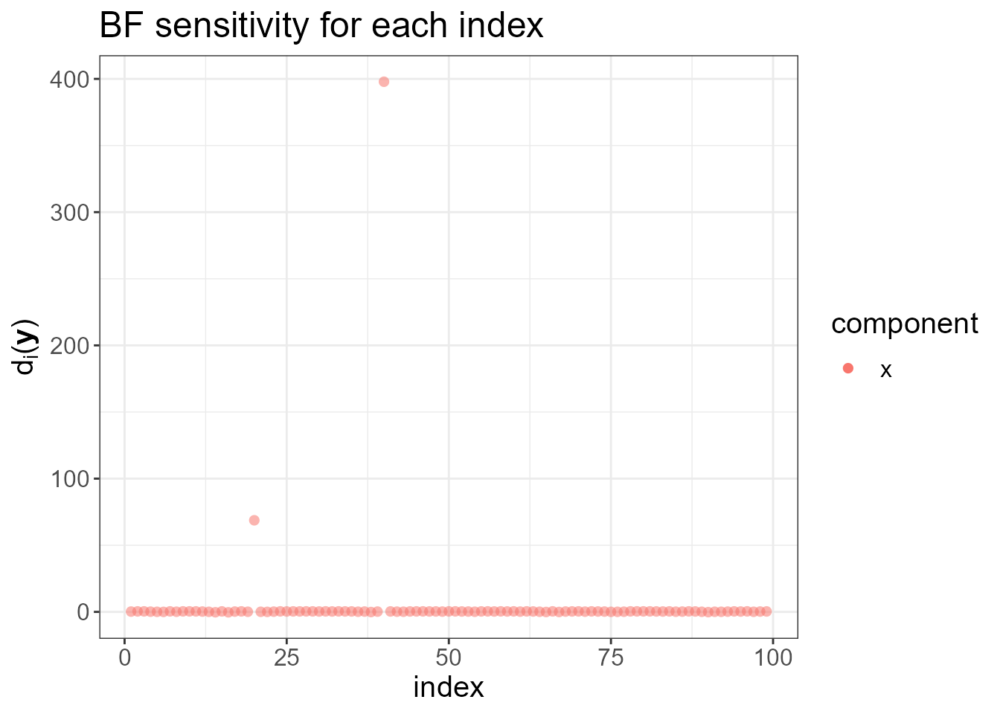
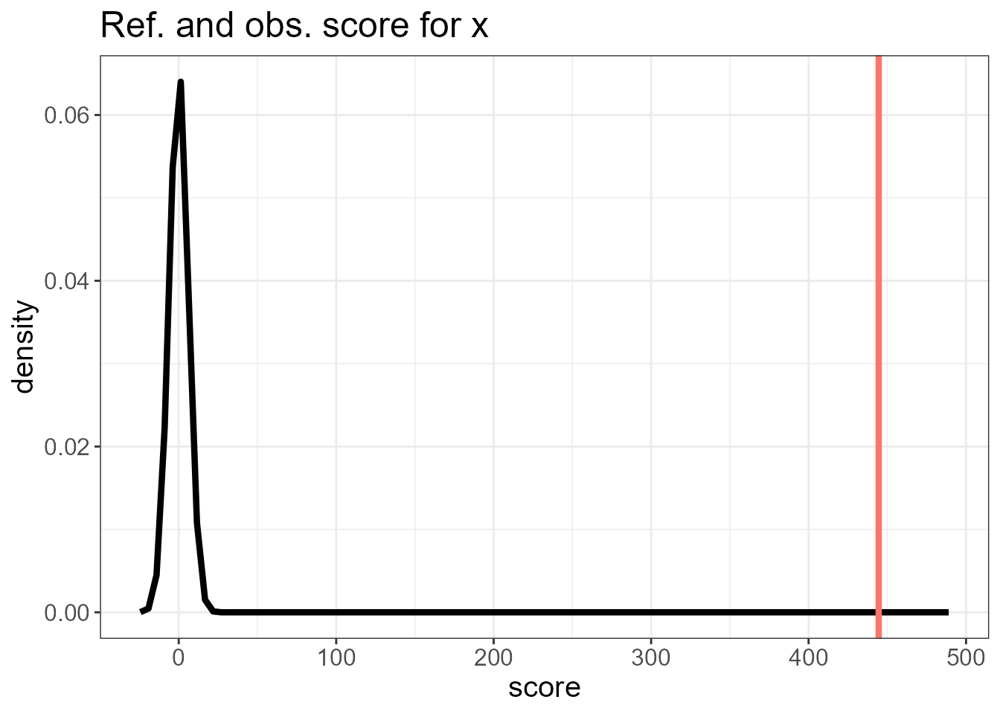
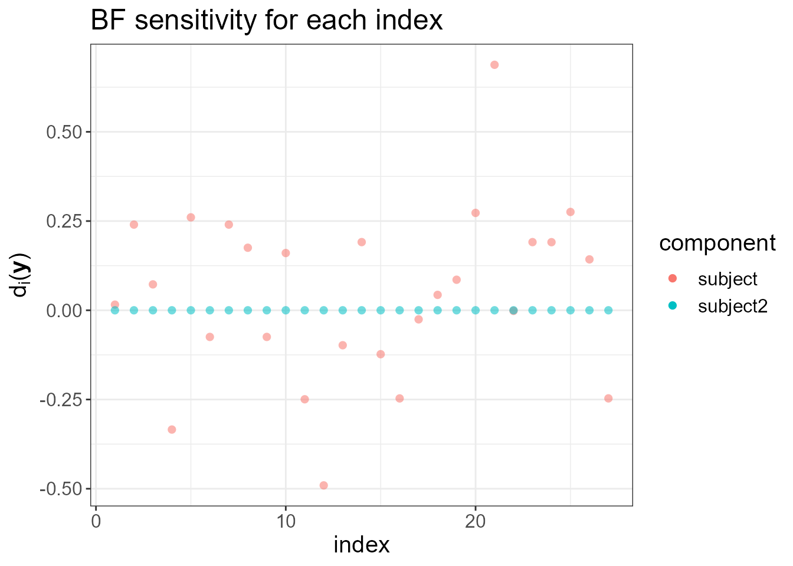
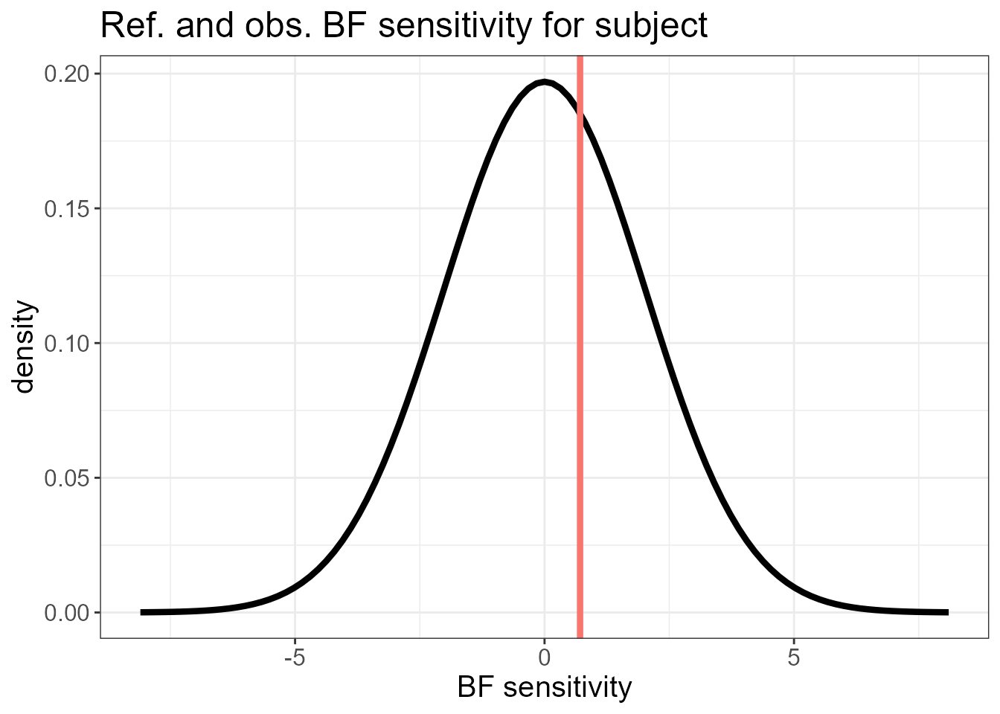
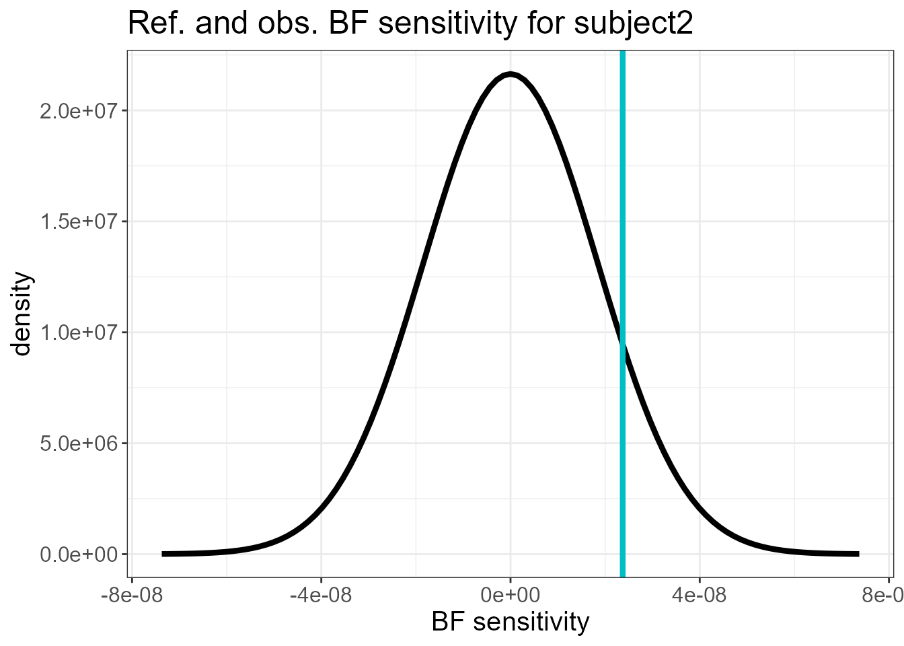
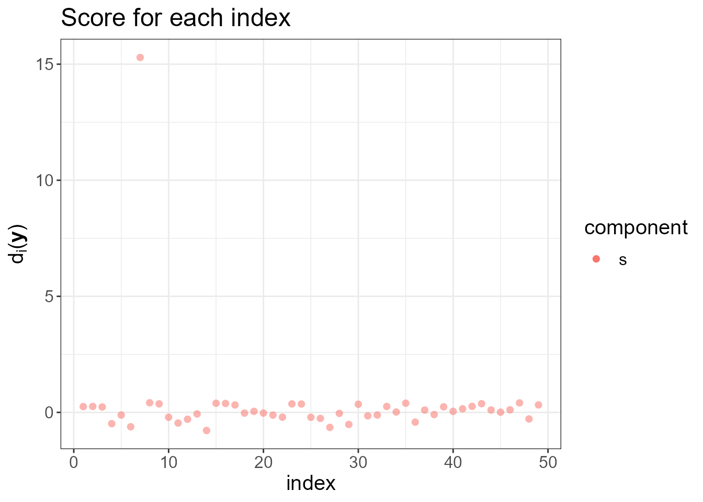
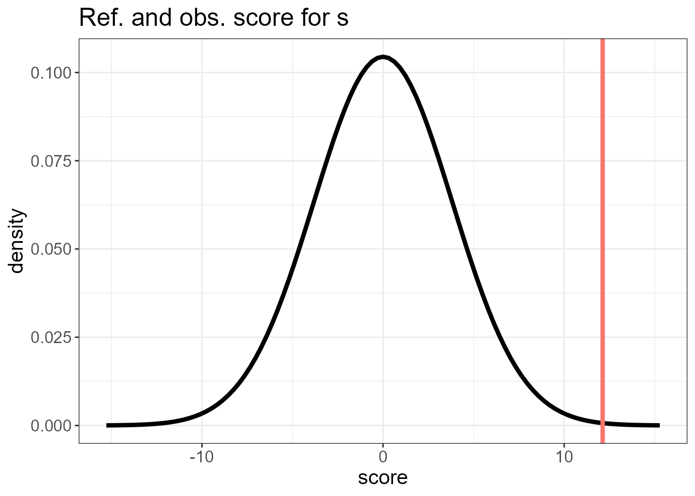

An introduction to the ngvb package
Rafael Cabral
2023-05-15
ngvb.RmdIntroduction
Latent Gaussian models (LGMs) assume that the latent variables \(\mathbf{x}^G\) follow a Gaussian random
vector with mean \(\mathbf{\mu}\) and
precision matrix \(\mathbf{Q}=
\mathbf{\mathbf{D}}^T \mathbf{D}\). It can be expressed through
\[\begin{equation}\label{eq:gaussian}
\mathbf{D}(\mathbf{x}^G -\mathbf{\mu})\overset{d}{=} \mathbf{Z},
\end{equation}\] where \(\mathbf{Z}\) is a vector of i.i.d. standard
Gaussian variables. Models of this type can be fitted with
inla. The non-Gaussian extension for \(\mathbf{x}^G\) consists in replacing the
driving noise distribution: \[\begin{equation}\label{eq:frame}
\mathbf{D}(\mathbf{x}-\mathbf{\mu})\overset{d}{=} \mathbf{\Lambda},
\end{equation}\] where \(\boldsymbol{\Lambda}\) is a vector of
independent and standardized normal-inverse Gaussian (NIG) random
variables that depend on the parameter \(\eta\), which controls the leptokurtosis.
This extension leads to latent non-Gaussian models (LnGMs). The package
ngvb is designed to fit these models. ngvb is
based on a variational Bayes algorithm. It leverages the fact that the
conditioned latent field \(\mathbf{x}|\mathbf{V}\) is normally
distributed where \(\mathbf{V}\) are
inverse-Gaussian mixing variables that regulate the extra flexibility of
the model.
We assume the user is familiar with the INLA package (Gómez-Rubio (2020)). Latent non-Gaussian models
are discussed in Cabral, Bolin, and Rue
(2022), and a Bayesian implementation of LnGMs in Stan can be
found in rafaelcabral96.github.io/nigstan/.
We present next a series of examples on how to use the ngvb
package.
RW1 model
Here we fit an RW1 latent process to the jumpts time
series.
library(ngvb)
#> Loading required package: INLA
#> Loading required package: Matrix
#> Loading required package: foreach
#> Loading required package: parallel
#> Loading required package: sp
#> This is INLA_22.06.03 built 2022-06-04 11:18:55 UTC.
#> - See www.r-inla.org/contact-us for how to get help.
#> Loading required package: GIGrvg
plot(jumpts)
The model is the following:
\[ y_i = \sigma_x x_i + \sigma_y \epsilon_i, \]
where \(\epsilon_i\) is standard Gaussian noise, and \(\mathbf{x}=[x_1,\dotsc,x_{100}]^T\) follows a non-Gaussian RW1 prior, defined by \(x_{i}= x_{i-1} + \Lambda_i(\eta), i=2,\dotsc,100\), where \(\Lambda_i(\eta)\) is normal-inverge Gaussian (NIG) noise with non-Gaussianity parameter \(\eta\) (\(\eta=0\) leads to the Gaussian model).
First, we start by fitting a latent Gaussian model (LGM), where the driving noise of the latent field is normally distributed:
formula <- y ~ -1 + f(x, model = "rw1")
LGM <- inla(formula,
data = jumpts,
control.compute = list(config = TRUE))We check the adequacy of the latent Gaussian assumption for this
model and data through the ng.check function, which
provides a set of diagnostic tools. It plots \(d_i(\mathbf{y}), \ i=1,\dotsc,n\), the
local increase (for small \(\eta\)) in
the Bayes factor (BF) when we make the latent field non-Gaussian. High
values of \(d_i(\mathbf{y})\) for a
particular index \(i\) indicate that
making the driving noise \(\Lambda_i(\eta)\) non-Gaussian increases
the Bayes Factor, and thus indicating the lack of flexibility of the
latent Gaussian assumption at that location. Notice that the two sudden
jumps are detected in the next plot.
It also plots the overall BF sensitivity \(s_0(\mathbf{y}) = \sum_i d_i(\mathbf{y})\) (red line) against its reference distribution. A high mismatch suggests that there could be non-Gaussian features in the observed data that are better modelled by an LnGM.
check.list <- ng.check(LGM)
#> Warning: geom_vline(): Ignoring `mapping` because `xintercept` was provided.
#> $plot.ranking
#>
#> $plot.ref
#> $plot.ref[[1]]
The diagnostic plots suggest we could benefit from fitting an LnGM.
Next, we consider the non-Gaussian version of the previous LGM model,
where the latent field is driven by NIG noise. We use the output of the
inla function LGM as the input of the
ngvb function. By default, the leptokurtosis parameter
\(\eta\) has an exponential prior with
rate parameter equal to 1. This can be changed with the argument
alpha.eta. Run ?ngvb to see the other
arguments.
LnGM <- ngvb(fit = LGM)
#> [1] "Warning: You need to add log(|D|) to mll: check inla.doc(generic0)"
#>
#> 0Oo----------- Iteration 1 -----------oO0
#> Initial value of eta: 0.5
#>
#> 0Oo----------- Iteration 2 -----------oO0
#> Expectation of eta: 4.878
#>
#> 0Oo----------- Iteration 3 -----------oO0
#> Expectation of eta: 3.952
#>
#> 0Oo----------- Iteration 4 -----------oO0
#> Expectation of eta: 3.423
#>
#> 0Oo----------- Iteration 5 -----------oO0
#> Expectation of eta: 3.06
#>
#> 0Oo----------- Iteration 6 -----------oO0
#> Expectation of eta: 2.747
#>
#> 0Oo----------- Iteration 7 -----------oO0
#> Expectation of eta: 2.616
#>
#> 0Oo----------- Iteration 8 -----------oO0
#> Expectation of eta: 2.476
#>
#> 0Oo----------- Iteration 9 -----------oO0
#> Expectation of eta: 2.427
#>
#> 0Oo----------- Iteration 10 -----------oO0
#> Expectation of eta: 2.398
#>
#> 0Oo----------- Maximum number of iterations reached -----------oO0LnGM is an S4 object of class ngvb.list
containing the outputs, which can be accessed with
LnGM@.... Available methods are summary,
print, plot, fitted, and
simulate. To read the help functions, run:
#?`summary,ngvb.list-method`
#?`print,ngvb.list-method`
#?`plot,ngvb.list,missing-method`
#?`fitted,ngvb.list-method`
#?`simulate,ngvb.list-method`We can see in plot(LnGM) that the two jump locations
were picked up by the mixing variables \(V\) (which add more flexibility on those
locations), and the evolution of the parameter \(\eta\) seems to indicate convergence.
plot(LnGM)LnGM@LGM contains the inla object containing summaries
and marginals of the LGM approximation of \((x,\theta)\) for the last iteration. We
show next the Bayes factor:
exp(LnGM@LGM$mlik[2] - LGM$mlik[2])
#> [1] 1.760063e+15Random slople, random intercept model (several model components)
We fit here growth curves from an orthodontic study including several
male and female children at ages 8,10,12, and 14. For more information
and references, run ?mice::potthoffroy. Next, we show a
Trellis plot, where female subjects have labels starting with F and male
subjects starting with M.
We use the following linear mixed-effects model to describe the response growth with age:
\[ y_{i j}=\beta_0+\delta_0 I_i(F) +\left(\beta_1+\delta_1 I_i(F)\right) t_j + b_{0 i}+b_{1 i} t_j+\epsilon_{i j}, \]
where \(y_{i j}\) denotes the response for the \(i\)th subject at age \(t_j\), \(i=1, \ldots, 27\) and \(j=1, \ldots, 4\) ; \(\beta_0\) and \(\beta_1\) denote, respectively, the intercept and the slope fixed effects for boys; \(\delta_0\) and \(\delta_1\) denote, respectively, the difference in intercept and slope fixed effects between girls and boys; \(I_i(F)\) denotes an indicator variable for females; \(\mathbf{b}_i=\left(b_{0 i}, b_{1 i}\right)\) is the random effects vector for the \(i\) th subject; and \(\epsilon_{i j}\) is the within-subject error.
The dataset is:
summary(Orthodont)
#> subject Female time value tF
#> Min. : 1 Min. :0.0000 Min. :0.00 Min. :16.50 Min. :0.000
#> 1st Qu.: 7 1st Qu.:0.0000 1st Qu.:0.75 1st Qu.:22.00 1st Qu.:0.000
#> Median :14 Median :0.0000 Median :1.50 Median :23.75 Median :0.000
#> Mean :14 Mean :0.4074 Mean :1.50 Mean :24.02 Mean :1.019
#> 3rd Qu.:21 3rd Qu.:1.0000 3rd Qu.:2.25 3rd Qu.:26.00 3rd Qu.:2.000
#> Max. :27 Max. :1.0000 Max. :3.00 Max. :31.50 Max. :4.000
#> subject2
#> Min. : 1
#> 1st Qu.: 7
#> Median :14
#> Mean :14
#> 3rd Qu.:21
#> Max. :27If the random effects have a normal prior, the previous model is an
LGM that can be fitted in INLA. The random intercept is elicited in
formula by f(subject, model = "iid"), and the
random slopes by f(subject2, time, model = "iid"). The
covariates subject1 and subject2 are the same
since the f()-terms in INLA should depend on the unique names of the
covariates.
formula <- value ~ 1 + Female + time + tF + f(subject, model = "iid") + f(subject2, time, model = "iid")
LGM <- inla(formula,
data = Orthodont,
control.compute = list(config = TRUE))We now run the ng.check function to generate diagnostic
plots regarding the latent Gaussianity assumption.
check.list <- ng.check(LGM)
#> Warning: geom_vline(): Ignoring `mapping` because `xintercept` was provided.
#> geom_vline(): Ignoring `mapping` because `xintercept` was provided.
#> $plot.ranking
#>
#> $plot.ref
#> $plot.ref[[1]]
#>
#> $plot.ref[[2]]
The last two plots do not show a large mismatch between \(s_0(\mathbf{y})\) and its reference distribution. The sensitivity measures of the fixed effects relative to the latent Gaussianity assumption for the random intercepts (subject) and random slopes (subject2) is shown next. These are small compared to the posterior standard deviation of the fixed effects.
check.list$sens.fixed.matrix
#> (Intercept) Female time tF
#> subject -6.467191e-01 8.005355e-01 -4.748893e-05 1.165662e-04
#> subject2 -9.455233e-11 -2.395009e-07 -2.940273e-07 2.397182e-07However, for illustration purposes, we still fit an LnGM. We consider the prior random effects to be distributed according to long-tailed NIG variables to accommodate possible outliers in the intercepts and slopes.
LnGM <- ngvb(LGM)
#>
#> 0Oo----------- Iteration 1 -----------oO0
#> Initial value of eta: 0.5 0.5
#>
#> 0Oo----------- Iteration 2 -----------oO0
#> Expectation of eta: 0.302 0.13
#>
#> 0Oo----------- Iteration 3 -----------oO0
#> Expectation of eta: 0.351 0.152
#>
#> 0Oo----------- Iteration 4 -----------oO0
#> Expectation of eta: 0.401 0.151
#>
#> 0Oo----------- Iteration 5 -----------oO0
#> Expectation of eta: 0.388 0.152
#>
#> 0Oo----------- Iteration 6 -----------oO0
#> Expectation of eta: 0.391 0.151
#>
#> 0Oo----------- Convergence achieved -----------oO0
plot(LnGM)For the random slopes (subject2), the posterior means of the mixing variables \(V\) are very close to 1, and \(\eta\) is close to 0, suggesting that a non-Gaussian model for this component is not necessary.
We show next the Bayes factor:
exp(LnGM@LGM$mlik[2] - LGM$mlik[2])
#> [1] 6.862794SAR model (using manual.configs)
Here we demonstrate how to fit LnGM models currently unavailable in
ngvb or inla using the rgeneric functionality
of inla and the manual.configs argument of
ngvb.
We study here areal data, which consists of the number of residential
burglaries and vehicle thefts per thousand households (\(y_i\)) in 49 counties of Columbus, Ohio, in
1980. This dataset can be found in the spdep package. We
consider the following model:
\[ y_{i}= \beta_0 + \beta_1 \mathrm{HV}_i + \beta_2 \mathrm{HI}_i + \sigma_{\mathbf{x}}x_i + \sigma_{\epsilon}\epsilon_i, \]
where \(\mathrm{HV}_i\) and \(\mathrm{HI}_i\) are the average household value and household income for county \(i\), and \(\mathbf{x}\) accounts for structured spatial effects, while \(\epsilon_i \overset{i.i.d}{\sim} N(0,1)\) is an unstructured spatial effect.
We consider a simultaneous autoregressive (SAR) model for the spatially structured effects \(\mathbf{x}\). The Gaussian version of this model can be built from the following system \(\mathbf{D}_{SAR}\mathbf{x} = \sigma_{\mathbf{x}}\mathbf{Z}\), where \(\mathbf{D}_{SAR}=\mathbf{I}-\rho\mathbf{W}\). \(\mathbf{W}\) is a row standardized adjacency matrix and \(-1<\rho<1\). The equivalent model driven by NIG noise is then \(\mathbf{D}_{SAR}\mathbf{x} = \sigma_{\mathbf{x}}\mathbf{\Lambda}\), where \(\mathbf{\Lambda}\) is i.i.d. standardized NIG noise.
Gaussian SAR models are not implemented in INLA, so we have to use
the rgeneric or cgeneric functionalities
(Gómez-Rubio (2020)). We start by loading
and preparing the data.
# Required package names
packages <- c("spdep", "rgdal")
# Install packages not yet installed
installed_packages <- packages %in% rownames(installed.packages())
if (any(installed_packages == FALSE)) { install.packages(packages[!installed_packages]) }
# Packages loading
invisible(lapply(packages, library, character.only = TRUE))
data(columbus)
data <- columbus[,c("CRIME","HOVAL","INC")] # data
N <- nrow(data) # number of counties
data$s <- 1:N
map <- readOGR(system.file("shapes/columbus.shp", package="spData")[1]) #shape file containing the polygons
#> OGR data source with driver: ESRI Shapefile
#> Source: "C:\R\library\spData\shapes\columbus.shp", layer: "columbus"
#> with 49 features
#> It has 20 fields
#> Integer64 fields read as strings: COLUMBUS_ COLUMBUS_I POLYID
plot(map)
We construct now the row standardized adjacency matrix \(\mathbf{W}\)
nb_q <- poly2nb(map) # Construct neighbours list from polygon list
n <- length(nb_q)
W <- matrix(0, nrow=n, ncol=n)
for(i in 1:length(nb_q)){
W[i,nb_q[[i]]] <- 1
}
W <- diag(1/rowSums(W))%*%W # Row standardize adjacency matrix
eigenv <- eigen(W)$values # Eigenvalues of W. We need them to compute the log-determinant of the nb_qWe now implement the latent process \(\mathbf{x}|\mathbf{y},\mathbf{V},\sigma_x,\rho
\sim N(\mathbf{0}, \sigma_x^{-2} \mathbf{D}_{SAR}^{-1}
\text{diag}(\mathbf{V})\mathbf{D}_{SAR}^{-T})\) in
rgeneric. The precision matrix is \(\mathbf{Q} = \tau_x \mathbf{D}_{SAR}^T
\text{diag}(\mathbf{V})^{-1}\mathbf{D}_{SAR}\) and it is defined
in the Q function. We consider a \(\text{Unif}(0,1)\) prior on \(\rho\) and a half-normal prior on \(\tau_x\).
'inla.rgeneric.sar.model' <- function(
cmd = c("graph", "Q", "mu", "initial", "log.norm.const",
"log.prior", "quit"),
theta = NULL) {
envir = parent.env(environment())
#Internal scale is log of precision and log of kappa
interpret.theta <- function() {
return(list(prec = exp(theta[1L]),
rho = exp(theta[2L])/(1+exp(theta[2L]))))
}
graph <- function(){
return(Q())
}
Q <- function() {
param = interpret.theta()
rho <- param$rho
prec <- param$prec
D = Diagonal(n,rep(1,n)) - rho*W
return(prec*t(D)%*%Diagonal(n,1/V)%*%D)
}
mu <- function()
{
return(numeric(0))
}
log.norm.const <- function() {
param = interpret.theta()
rho <- param$rho
prec <- param$prec
log.det.D <- sum(log(1-rho*eigenv))
res <- -0.5*n*log(2*pi) + 0.5*n*log(prec) + log.det.D -0.5*sum(log(V))
return (res) }
log.prior <- function() {
param = interpret.theta()
rho <- param$rho
prec <- param$prec
tau_prec = 1/sqrt(5)
prior.theta1 <- log( (2*sqrt(tau_prec/(2*pi)))*exp(-0.5*tau_prec*prec^2) ) + theta[1L]
prior.theta2 <- log(exp(theta[2L])/(1+exp(theta[2L]))^2)
res <- prior.theta1 + prior.theta2
return(res)
}
initial <- function() {
return(c(0,0))
}
quit <- function() {
return(invisible())
}
if (!length(theta)) theta = initial()
res <- do.call(match.arg(cmd), args = list())
return(res)
}We now create a function that receives as input the mixing vector
\(\mathbf{V}\) and outputs the inla
object. The input should be a list of numeric vectors, where each vector
corresponds to each model component to extend to non-Gaussianity (in
this example, there is just one model component). The argument
control.compute = list(config = TRUE) in the
inla function is required.
inla.fit.V <- function(V){
model = inla.rgeneric.define(inla.rgeneric.sar.model, n = N, V = V[[1]], W = W, eigenv = eigenv)
formula <- CRIME ~ 1 + HOVAL + INC + f(s, model = model)
fit <- inla(formula,
data = data,
control.compute = list(config = TRUE))
return(fit)
}If \(\mathbf{V}=\mathbf{1}\) then
the latent field is Gaussian and inla.fit.V gives us the
LGM.
LGM <- inla.fit.V(list(rep(1,N)))
#> Warning in inla.model.properties.generic(inla.trim.family(model), mm[names(mm) == : Model 'rgeneric' in section 'latent' is marked as 'experimental'; changes may appear at any time.
#> Use this model with extra care!!! Further warnings are disabled.
LGM$summary.fixed
#> mean sd 0.025quant 0.5quant 0.975quant mode
#> (Intercept) 60.0654513 6.34655354 46.8598297 60.2593757 72.0097849 60.5304478
#> HOVAL -0.3038646 0.09423473 -0.4892529 -0.3039573 -0.1179609 -0.3041503
#> INC -0.9481599 0.37259524 -1.6913821 -0.9444518 -0.2239064 -0.9358919
#> kld
#> (Intercept) 1.869492e-07
#> HOVAL 1.006507e-08
#> INC 1.126924e-08We now define the LnGM in ngvb using the
manual.configs argument. manual.configs should
be a list containing inla.fit.V. It should also include
Dfunc which is a list containing the functions \(\mathbf{D}_{SAR}(\boldsymbol{\theta})\) for
each model component, that receive as input all hyperparameters \(\boldsymbol{\theta}\) in internal scale,
and outputs \(\mathbf{D}_{SAR}(\boldsymbol{\theta})\).
Finally, manual.configs also needs h, a list
containing all predefined constant vectors (see Cabral, Bolin, and Rue (2022)) for each model
component.
D1 <- function(theta){
prec <- exp(theta[2L])
rho <- exp(theta[3L])/(1+exp(theta[3L]))
return(sqrt(prec)*(Diagonal(N,rep(1,N)) - rho*W))
}
Dfunc <- list(D1)
h <- list(rep(1,N))
manual.configs <- list(inla.fit.V = inla.fit.V, Dfunc = Dfunc, h = h)We run the diagnostic plots first as follows.
check.list <- ng.check(LGM, Dfunc, h)
#> Warning: geom_vline(): Ignoring `mapping` because `xintercept` was provided.
#> $plot.ranking
#>
#> $plot.ref
#> $plot.ref[[1]]
The last plots identify an outlying county. To fit the LnGM, we now
call ngvb, and analyze the output.
LnGM <- ngvb(manual.configs = manual.configs, selection = list(s = 1:49),
iter = 10, d.sampling = TRUE, n.sampling = 1000)
#>
#> 0Oo----------- Iteration 1 -----------oO0
#> Initial value of eta: 0.5
#>
#> 0Oo----------- Iteration 2 -----------oO0
#> Expectation of eta: 0.36
#>
#> 0Oo----------- Iteration 3 -----------oO0
#> Expectation of eta: 0.541
#>
#> 0Oo----------- Iteration 4 -----------oO0
#> Expectation of eta: 0.605
#>
#> 0Oo----------- Iteration 5 -----------oO0
#> Expectation of eta: 0.655
#>
#> 0Oo----------- Iteration 6 -----------oO0
#> Expectation of eta: 0.666
#>
#> 0Oo----------- Iteration 7 -----------oO0
#> Expectation of eta: 0.645
#>
#> 0Oo----------- Iteration 8 -----------oO0
#> Expectation of eta: 0.672
#>
#> 0Oo----------- Iteration 9 -----------oO0
#> Expectation of eta: 0.681
#>
#> 0Oo----------- Iteration 10 -----------oO0
#> Expectation of eta: 0.687
#>
#> 0Oo----------- Convergence achieved -----------oO0
LnGM@LGM$summary.fixed
#> mean sd 0.025quant 0.5quant 0.975quant mode
#> (Intercept) 58.2211212 5.38888939 46.9580137 58.4203214 68.29904011 58.7650042
#> HOVAL -0.1663135 0.07726016 -0.3180045 -0.1665085 -0.01352487 -0.1668969
#> INC -1.1950034 0.30496795 -1.8095714 -1.1893868 -0.61022283 -1.1768686
#> kld
#> (Intercept) 7.312655e-08
#> HOVAL 1.080458e-08
#> INC 2.704894e-08We can see in plot(LnGM) that more flexibility was added
in 2 counties.
plot(LnGM)The Bayes factor is:
exp(LnGM@LGM$mlik[2]-LGM$mlik[2])
#> [1] 111510.8